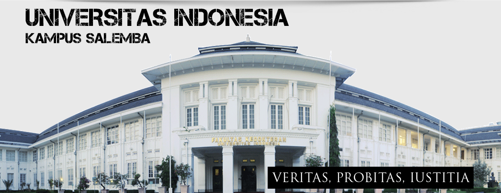

About Universitas Indonesia

Sebelum kampus Universitas Indonesia di Depok dibangun pada 1987, Universitas Indonesia memiliki tiga lokasi kampus yaitu di Salemba, Pegangsaan Timur dan Rawamangun. Setelah kampus baru didirikan di lahan seluas 320 hektare di Depok, kampus Rawamangun yang mencakup beberapa fakultas dipindah, sementara kampus Salemba masih dipertahankan untuk Fakultas Kedokteran, Fakultas Kedokteran Gigi dan Program Pascasarjana. Tidak lama setelah tahun 2000, Universitas Indonesia menjadi satu dari beberapa universitas yang mempunyai status Badan Hukum Milik Negara di Indonesia. Perubahan status ini membawa perubahan yang signifikan untuk Universitas Indonesia yaitu otonomi yang lebih besar dalam pengembangan akademis dan pengelolaan keuangan. (sumber : Universitas Indonesia | Sejarah)
Visi Universitas Indonesia
“Menjadi pusat ilmu pengetahuan, teknologi, dan kebudayaan yang unggul dan berdaya saing, melalui upaya mencerdasakan kehidupan bangsa untuk meningkatkan kesejahteraan masyarakat, sehingga berkontribusi bagi pembangunan masyarakat Indonesia dan dunia”
Misi Universitas Indonesia
- Menyediakan akses yang luas dan adil, serta pendidikan dan pengajaran yang berkualitas.
- Menyelenggarakan kegiatan Tridharma yang bermutu dan relevan dengan tantangan nasional serta global.
- Menciptakan lulusan yang berintelektualitas tinggi, berbudi luhur dan mampu bersaing secara global.
- enciptakan iklim akademik yang mampu mendukung perwujudan visi UI.